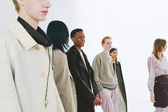

Auralee means “ The Lands That Lights Up”. In the words of founder Ryota Iwai : “I didn’t want the brand’s name to be too dramatic or meaningful. I definitely would’ve been uncomfortable naming the brand after myself. I wanted something co ncise—and memorable.alee’ is the title of an old American folk song.
At first, I didn’t know what it actually meant—I just responded to the soulful , evocative sound of the name. When I found out its meaning, I thought it very appropriate : I env on my collections to be\